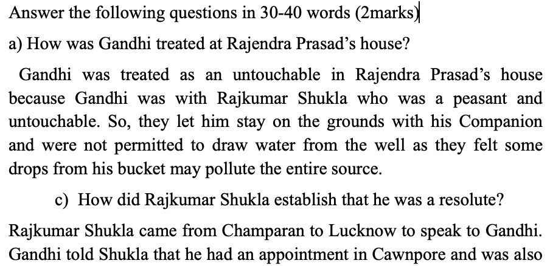
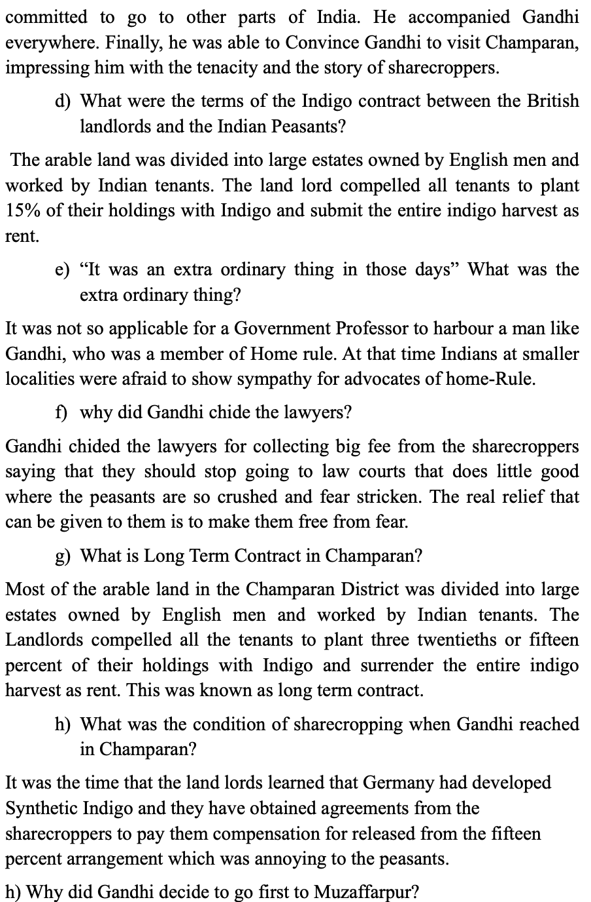
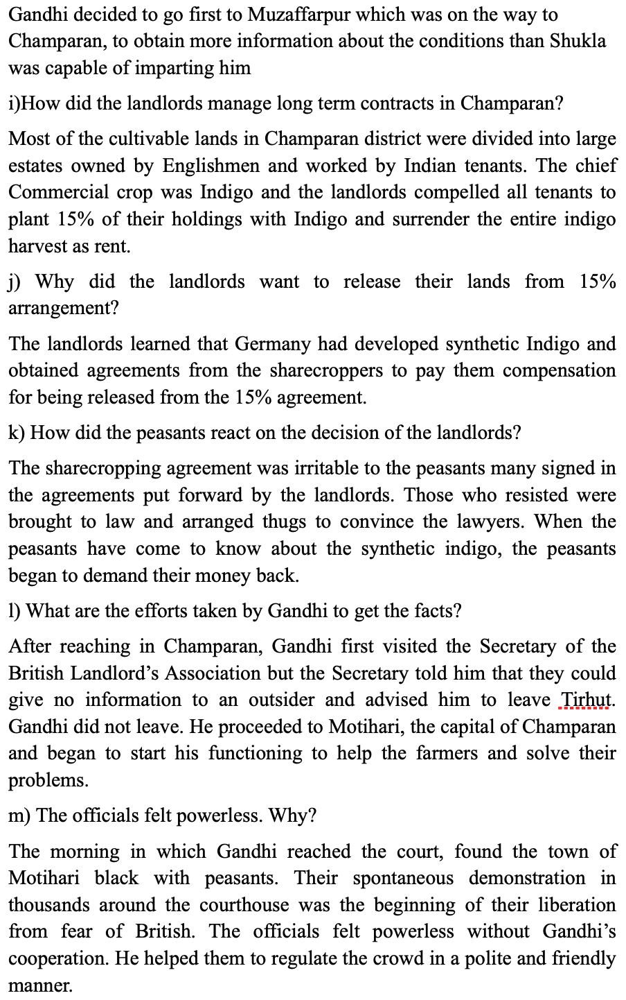
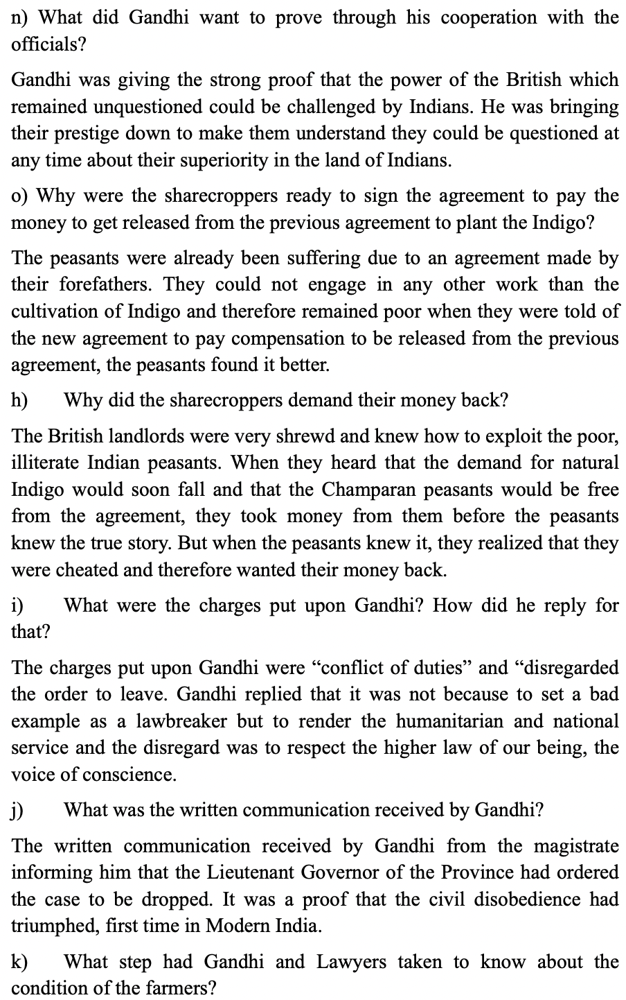
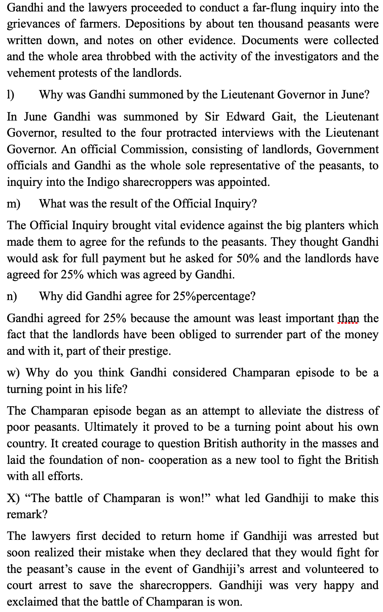
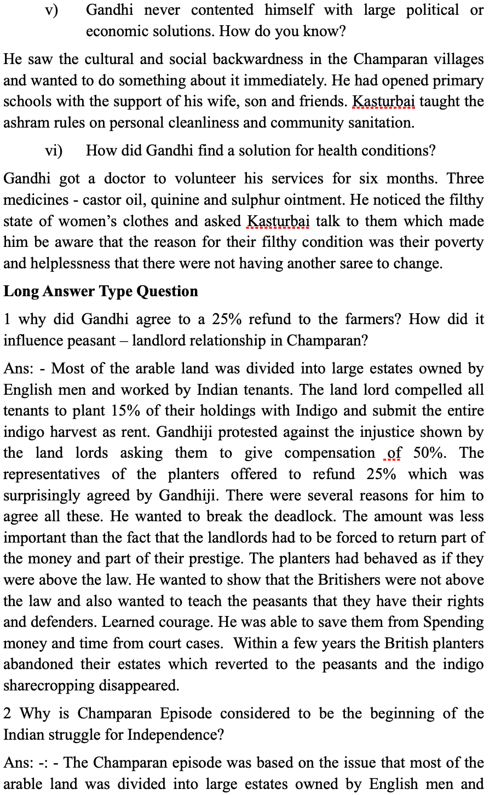
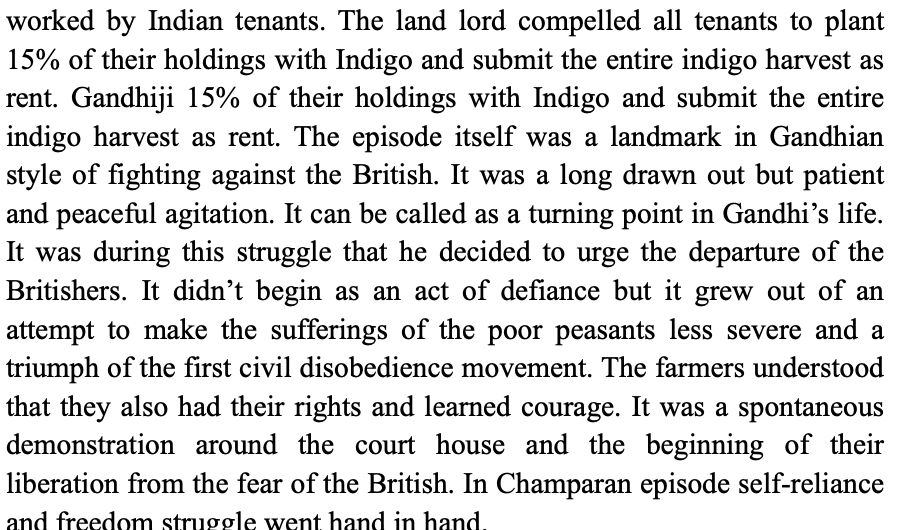

About
Hi, I'm ESQUILINE-EDU.COM, Welcome to my world
LET'S LEARN TOGETHER
Welcome to my Webpage.
FOOTPRINTS WITHOUT FEET
Hi, I'm ESQUILINE-EDU.COM, Welcome to my world

FIRST FLIGHT
Hi, I'm ESQUILINE-EDU.COM, Welcome to my world

HORNBILL
Hi, I'm ESQUILINE-EDU.COM, Welcome to my world
CONTENTS
- THE PORTRAIT OF A LADY
- WE ARE NOT AFRAID TO DIE...;IF WE CAN ALL BE TOGETHER
- DISCOVERING TUT : THE SAGA CONTINUES
- LANDSCAPE OF THE SOUL
- THE AILING PLANET:THE GREEN MOVEMENT'S ROLE
- THE BROWNING VERSION
- THE ADVENTURE
- SILK ROAD
- A PHOTOGRAPH
- THE LABURNUM TOP
- THE VOICE OF THE RAIN
- CHILDHOOD
- FATHER TO SON
- THE VOICE OF THE RAIN
PROSE
POETRY
Have a Nice Day!
SNAPSHOTS
Hi, I'm ESQUILINE-EDU.COM, Welcome to my world
CONTENTS
Have a Nice Day!
FLAMINGO
Hi, I'm ESQUILINE-EDU.COM, Welcome to my world

CONTENTS
Have a Nice Day!
VISTAS
Hi, I'm ESQUILINE-EDU.COM, Welcome to my world
CONTENTS
Have a Nice Day!
A TRIUMPH OF SURGERY
ABOUT THE AUTHOR
JAMES HERRIOT
About the Author:-James Albert Wight (3rd October 1916-23rd February 1995), best known by his pen name James Herriot, was a British Veterinary Surgeon and writer. He was famous in writing a series of eight books set in 1930s to 1950s about the animals and their owners and the first publication was in 1970.
SUMMARY
James Herriot, narrates his experience with Tricki, a dog, one of his patients and his mistress Mrs Pumphrey. As he was passing on the way, he happened to meet Mrs Pumphrey with tricki. He was worried to see Tricki who became fat, like a bloated sausage with leg at each corner. Mrs Pumphrey explained in a hurry that she found him weak with no energy and felt as suffering from loss of nutritious food. So, she began to give extra food to him extra food like some malt, cod-liver oil and a bowl of Horlicks at night to make him sleep. She continued saying that she couldn’t cut sweets from his diet as he likes cream cakes and chocolates. The doctor found that Tricki became greedy was ready to eat a meal at any time of the day. Mrs Pumphrey had given him a little walk and not much exercise was possible. Within few days Mr Herriot received a call from Mrs Pumphrey with a complaint that Tricki lost his interest even in his favourite in his food and a sensation of vomiting began to express. He spent all his time lying on a rug trying to get breath without moving and doing nothing. The doctor decided to get Tricki out of the house to save him and suggested to hospitalise him. Mrs Pumphrey was almost sad that she knew that Tricki can’t survive without seeing her and at the same time she has realised that he would die if the treatment is not given. Mr Herriot who was strongly determined have taken Tricki and walked towards his car. There was an expression of affection that the entire staff with Mrs Pumphrey, began to run with tricki’s day bed, night bed, favourite cushions, toys breakfast bowl, lunch bowl, supper bowl and many more things. Mr Herriot realised that there is not having sufficient space for all the stuff in his car and he started it. While moving he found that all of them were in tears and Tricki, sitting by the side, had wagged his tail. Mr Herriot had determined that he would cure the dog. In the hospital all the other dogs admitted there gathered around but Tricki’s reaction was dull and they left the place considering him uninteresting. Mr Herriot arranged a place for Tricki and for the first two days, he did not give any food to him and allowed to drink plenty of water. By evening of the second day he began to react and on the third day he started to create a painful sound for the sounds of the dogs in the yard. Slowly he began to mingle with other dogs enjoying food and play games. Since then his health began to get improve. Mrs Pumphrey kept on getting information about the improvement of Tricki and when she came to know that he is out of danger, she started to bring fresh eggs, two dozen at a time, to build up Tricki’s strength, followed by bottles of wine and brandy. The doctor and his partners had a happy time by consuming them with the egg in the morning, wine in the afternoon and brandy at night around bonfire. The doctor felt to keep the dog for a long time but he has informed Mrs Pumphrey that Tricki is alright and she can pick him from the hospital. In two weeks, he had become a strong muscled animal. When Tricki saw his mistress, he was so excited and jumped over her. Mrs Pumphrey said that it is the success of a doctor over a diseased patient.
Questions and Answers
1 What kind of a person do you think the narrator, a veterinary surgeon is? Would you say he was tactful as well as full of common sense?
Mr Herriot, the narrator was a sensible person who could understand his patients at one stroke. He was tactful because very easily he was able to understand that Tricki is in a dangerous condition. He was a person with full of common sense because he has given his full patience and attention to Tricki to bring him to normal condition.
2 Do you think Tricki was happy to go home? What do you think will happen now?
Yes, Tricki was happy to go home. I think Mrs Pumphrey will understand her mistake of overfeeding to Tricki and take care for not to create same diseased condition for Tricki.
3 Do you think this is a real-life episode or mere fiction? Or is it a mixture of both?
‘A Triumph of Surgery’ is written in first person narration to show it as a real-life experience. It can be a mixture of both where it says that Mrs Pumphrey had sent eatables and alcohol to her pet which were enjoyed by the doctor and his partners.
FOOTPRINTS WITHOUT FEET 1
Questions and Answers
How did the Invisible man first become visible?
The Invisible man first became visible after he slipped into a store for keeping warm and wear clothes. Why was he wandering the streets?
He was wandering the streets because being a scientist he was doing experiments in his rented house and his landlord disliked him. He se fire to the house to take revenge on the landlord and was began to wander in the street, without money, without clothes and invisible.
Why does Mrs. hall find the scientist eccentric?
According to Mrs Hall, the arrival of a stranger at an inn in winter was an unusual event. A stranger of an such an uncommon appearance made her to consider him as eccentric.
What curious episode occurs in the study?
Very early in the morning, a clergy man and his wife were awakened by noises in the study creeping downstairs, hearing the chink of money being taken from the clergy man’s desk. It was later realised that the clergyman was robbed by someone and the money kept in the study, had been stolen.
What other extraordinary things happen at the inn?
Mrs and Mr Hall, who had awakened early in the morning, found that the scientist is out somewhere and decided to investigate the room. While observing the room, there was a sudden sniff, a moment later the hat on the bedpost leapt up and dashed itself into her face, then the bedroom chair became alive, springing into the air it charged straight at Mrs Hall and the chair pushed them out of the room. She was almost fell down the chairs in hysterics.
Think About It.
“Griffin was rather a lawless person.” Comment.
Griffin was a brilliant scientist, who had successfully invented the medicine to turn objects with mass to be transparent. He was brilliant in using his intelligence but his behaviour of lawlessness made him to turn into a negative character. The best example is his attitude towards his landlord. His landlord disliked him and tried to eject him. As a part of taking revenge upon him, Griffin set fire to the house and ran away from there. He had removed his clothes to get away without being seen. His act of lawlessness brought him to be without clothes, without money and quite invisible. His abilities and intelligence which could have been used for the prosperity of society and country had become meaningless and a matter of inconvenience for himself because of his lawlessness.
How would you assess Griffin as a Scientist?
Griffin was a brilliant scientist, who had successfully invented the medicine to turn objects with mass to be transparent. He was brilliant in using his intelligence but his behaviour of lawlessness made him to turn into a negative character. The best example is his attitude towards his landlord. His landlord disliked him and tried to eject him. As a part of taking revenge upon him, Griffin set fire to the house and ran away from there. He had removed his clothes to get away without being seen. His act of lawlessness brought him to be without clothes, without money and quite invisible. His abilities and intelligence which could have been used for the prosperity of society and country had become meaningless and a matter of inconvenience for himself because of his lawlessness. If he would have been used his invention for a good cause, it would have helped for the development of technology.
THE MAKING OF A SCIENTIST
Questions and Answers
How did a book become a turning point in Richard Ebright’s life?
‘The Travels of Monarch X’, a children’s book, gifted by her mother, told him, how monarch butterflies migrate to Central America and opened the world of Science, to a boy who was so eager about his collections. It became a turning point in his life.
How did his mother help him?
His mother had always encouraged his interest in learning. She took him on trips, bought him telescopes, microscopes, cameras mounting materials and other equipment and helped him in many other ways.
What lesson does Ebright learn when he does not win anything at a science fair?
The lesson that Ebright learnt was that his entry was slides of frog tissues which he showed under a microscope and the winners had tried to do real experiments. This made him to realize that if he wants to win he has to present real experiments.
What experiments and projects does he then undertake?
Ebright tried to find the cause of a viral disease that kills all monarch caterpillars every few years by raising caterpillars in the presence of beetles.
What are the qualities that go into the making of a scientist?
Richard’s qualities such as his mind of curiosity, his intelligence and the best utilisation of his abilities supported him. He always tried to put extra effort and curiosity in all his works which made him to be successful as a scientist.
THE MAKING OF A SCIENTIST
Questions and Answers
How did a book become a turning point in Richard Ebright’s life?
‘The Travels of Monarch X’, a children’s book, gifted by her mother, told him, how monarch butterflies migrate to Central America and opened the world of Science, to a boy who was so eager about his collections. It became a turning point in his life.
How did his mother help him?
His mother had always encouraged his interest in learning. She took him on trips, bought him telescopes, microscopes, cameras mounting materials and other equipment and helped him in many other ways.
What lesson does Ebright learn when he does not win anything at a science fair?
The lesson that Ebright learnt was that his entry was slides of frog tissues which he showed under a microscope and the winners had tried to do real experiments. This made him to realize that if he wants to win he has to present real experiments.
What experiments and projects does he then undertake?
Ebright tried to find the cause of a viral disease that kills all monarch caterpillars every few years by raising caterpillars in the presence of beetles.
What are the qualities that go into the making of a scientist?
Richard’s qualities such as his mind of curiosity, his intelligence and the best utilisation of his abilities supported him. He always tried to put extra effort and curiosity in all his works which made him to be successful as a scientist.
THE HACK DRIVER
Questions and Answers
1 Why is the lawyer sent to New Mullion? What does he first think about the place?
The lawyer is sent to New Mullion to serve summons on a man called Oliver Lutkins. He thought about the place that as sweet and simple country village.
2 Who befriends him? Where does he take him?
The delivery man at the station, who was at the age of about forty, red-faced, cheerful and thick about the middle, in his dirty and well- worn working clothes, introduced himself as a hack driver, named Bill Magnuson, befriends him. He takes him to the places where Oliver Lutkins, be possibly seen.
3 What does he say about Lutkins?
He says that Oliver Lutkins borrows money from people and never pays back and he owes fifty cents on the poker game to the hack driver himself.
4 What more does Bill say about Lutkins and his family?
Bill says that Oliver Lutkins is really not bad but its hard to get money back from him and Lutkins is an expert in escaping from others in his fancy clothes. He also added that his mother is a terror, who is about nine feet tall and four feet thick and quick as a cat.
5 Does the narrator serve the summons that day?
No, the narrator does not serve the summons that day as he could not find Lutkins, even though he had searched for him everywhere with the help Bill.
6 Who is Lutkins?
Lutkins is a middle-aged hack driver, who lives at new Mullion and a witness in a law case. He is also a clever man who was able to take the lawyer or the narrator into confidence as helping him to search for Lutkins in disguise of Bill Magnuson.
BHOLI
Questions and Answers
1 Why is Bholi’s father worried about her?
Bholi’s father is worried about her because she had neither good looks nor intelligence as a result that she had fallen off the cot on her head and had damaged some part of her brain and her entire body was permanently disfigured by deep black pock, due to an attack of small-pox.
2 For what unusual reasons is Bholi sent to school?
Bholi is sent to school because her mother believed that if she is educated, she may get a chance to get married with her ugly face and lack of sense.
3 Does Bholi enjoy her first day at school?
Bholi does not enjoy her first day at school until her teacher had created confidence in her.
4 Does she find her teacher different from the people at home?
Yes, she found her teacher different from the people at home. According to her, teacher’s voice so soft and soothing and in all her life she had never been called Bholi and the teacher’s attitude touched her heart.
5 Why do Bholi’s parents accept Bishamber’s marriage proposal?
Bholi’s parents accepted Bishamber’s proposal because he was the owner of a big shop, a house of his own, several thousands in the bank and above everything else he did not ask for any dowry.
6 Why does the marriage not take place?
The marriage does not take place because Bishember Nath insisted Numberdar Ramlal, Bholi’s father, for five thousand rupees as Bishember Nath found that her face is full of pock marks.
7 Bholi had many apprehensions about going to school. What made her feel that she was going to a better place than home?
On the first day in which Bholi was going to school, she was bathed, oil was rubbed into her dry and matted hair and an old, clean dress of Champa was given to her. So, she felt that she was going to a better place than home.
8 How did Bholi’s teacher play an important role in changing the course of life?
Bholi’s teacher played an important role in changing the course of her life as she found her teacher different from the people at home. According to her, teacher’s voice was so soft and soothing and in all her life she had never been called Bholi and the teacher’s attitude touched her heart.
9 Why did Bholi at first agree to an unequal match? Why did she later reject the marriage? What does this tell us about her?
Bholi agreed to an unequal match at first because she wanted to honour and respect her father’s dignity. She later rejected the marriage because Bishember Nath had demanded for five thousand rupees as dowry, when he saw pock-marks on her face. This tells that the education gave the power of self - reliance and courage to Bholi to speak against the injustice that may have taken place towards her and her family.
A LETTER TO GOD
ABOUT THE AUTHOR
G.L. FUENTES
About the Author:-Gregorio Lopez Y Fuentes (November 17, 1895-December 10, 1966) was born in Mexico City and became one of the famous chroniclers of the Mexican Resolutioners. Spending in his father’s general store, he had come into touch with the Indians, farmers and labourers of the region and began to write about the lives of them, with a deeper insight.
SUMMARY
The story Letter to God revolves around the idea of a farmer, having unquestionable faith on God. Lencho the farmer was completely in confidence of God that he may get help from God. It was an unexpected situation that arose in the life of Lencho and his family. They were expecting to have a downpour of rain for a good harvest. The sudden change of wind and hailstorm had completely spoiled their expectations and all their crops. Lencho and family began to look forward for the help from God. Being a hardworking man, like an ox, had decided to write a letter to God. The following Sunday morning, Lencho had written a letter to God, saying that he is in need of God’s help. If he and his family will go hungry, unless there comes help from God. He had posted the letter in the post office with an address to ‘GOD”. The post man began to laugh by seeing the address. The postmaster, even though joined the laughter of the post man, suddenly stopped his laughter thinking about the height of Lencho’s faith in God. He had asked all his employees to help to keep the faith of the man up. He asked for money from his employees, he himself gave a part of his salary and several friends of his were obliged to give something for an act of charity. Even though he had tried all his ways to collect money as an act of charity, he couldn’t collect hundred pesos according to the requirement of Lencho. He had inserted all the money that is collected in an envelope, with an address, from ‘GOD’. The following Sunday Lencho came, in search of a reply from God and the postmaster, with the satisfaction of doing something good for a needy person, handed over the envelope to Lencho. He had opened the envelope and found that there were only seventy pesos. He began to think that God can not do this to him and the postoffice employees might have taken the money from that. He had started to write another letter, mentioning that he hadn’t got enough money so God has to sent remaining also but not through the post office because the people in post office are not trustworthy.
Questions and Answers
What was that and what will he do with it?
That was a letter and he himself would carry that to town and place in the mail.
“That is what they say” Who said these words? Whom does the word, ’they’ mean for?
The narrator said these words. They meant for the members of Lencho’s family.
What did he write?
He wrote,” God, if you don’t help me, my family and I will go hungry this year, I need a hundred pesos in order to sow my field again and to live until the crop comes, because the hailstorm……”
What did he write on the envelope?
He wrote on the letter” to God”.
What did he do after writing the letter?
He put the letter inside the envelope and still troubled to go to town.
What did he do at the post office?
At the post office he placed a stamp on the letter and dropped it into the mail box.
What did the postman do?
The postman went to his boss laughing heartily and showed him the letter to God.
Was the address familiar to the postman, why?
No, the address was not familiar to the postman because in his career, he never had known that address.
Give a brief description of the postmaster?
The postmaster was a fat and amiable fellow.
What did he do and how does he change his attitude suddenly?
He broke out to laughter but immediately turned serious
What did he do and what did he comment?
He tapped the letter on his desk and commented on the strong faith of the man who wrote the letter. He commented that if he could have the faith of the man who wrote that letter.
Why did the postmaster come up with an idea?
The postmaster came with an idea because he didn’t want shake the faith of the man who wrote the letter.
What was the idea?
The idea was to answer the letter.
What evidence does the letter give to the postmaster?
The evidence given to the postmaster was that he needed something more than goodwill, ink and paper.
Did he stick to his resolution? What did he do?
Yes, he stuck to his resolution. He asked for money from his employees.
How did the postmaster contribute?
The postmaster contributed by giving part of his salary.
How did he convince his friends?
He convinced his friends, by obliging them as an act of charity.
Why was he able to send only a little more than half?
He was able to send only a little more than half because It was impossible for him to gather hundred pesos.
What did he do with the money? What did he write in the letter put into the envelope?
He had inserted the money into the envelope. He wrote only a single word as a signature: God, in the letter put into the envelop.
When and why did Lencho came to the post office?
Lencho came to the post office on the following Sunday a bit earlier than usual to ask if there was a letter for him. Who handed the letter, over to Lencho and what was the post master doing?
The postman handed the letter to Lencho and the postmaster was looking on from his office, experiencing the contentment of a man who has performed a good deed.
Why didn’t Lencho show surprise?
Lencho didn’t show surprise because he was so faithful that God will reply his letter with the required money.
Why did he become angry?
He became angry because there were not having required money in the envelope and he felt that the people in the post office might have taken the money from the envelope.
How does the narrator explain the faith of Lencho in God?
The narrator explains the faith of Lencho in God by saying that God could neither make a mistake nor deny what Lencho has requested. What did he do immediately and why?
Immediately, he went up to the window to ask for paper and ink.
What did he do on the public writing table? What was his expression?
On the public writing table, he started to write with much wrinkling on his brow.
What did he do when he finished?
When he finished, he went to the window to buy a stamp which he licked and then affixed to the envelope with a blow of his fist. What happened on the moment the letter fell into the mailbox?
The moment the letter fell into the mailbox, the postmaster went to open it.
What was written in the letter?
“God: of the money that I asked for, only seventy pesos reached me. Send me the rest, since I need it very much. But don’t send it to me through the mail because post office employees are a bunch of crooks. Lencho.”
What opinion do you form about Lencho and his approach over the money he received?
Lencho is not a man of possession but is in need of money for his existence and is a person who has strong faith in God. He asked for money to God, yet he is not satisfied as he couldn’t get required money and asked for the rest of the money because of his strong faith. Oral Comprehension Check
What did Lencho hope for?
Lencho hoped for good rain.
Why did Lencho say the rain drops were like ‘new coins?
Lencho compared the rain drops to ‘new coins’ because raindrops would help him to get good harvest which may bring prosperity.
How did the rain change? What happened to Lencho’s fields?
The rain changed to hailstorm. All the crops in Lencho’s field were destroyed.
What were Lencho’s feelings when the rain stopped?
Lencho was in utter grief and sadness, when the rain stopped as he can forecast the lack of food in the coming year.
Who or what did Lencho have faith? what did he do?
Lencho had faith in God, whose eyes see everything, even what is deep in one’s conscience. He wrote a letter to God asking for hundred pesos in order to sow his field again until the crop comes.
Who reads the letter?
The post master read the letter.
What did the postmaster do then?
The postmaster laughed when he read the letter but immediately, he became serious. He realized the strong faith of the man who wrote the letter and didn’t want to shake his faith. So he decided to collect money and send to Lencho in order to not to shake his faith in God.
Was Lencho surprised to find a letter for him, with money in it?
No, Lencho was not surprised to find a letter for him, with money in it because of his strong faith in God, he had expected money with letter from God.
What made him angry?
Lencho was confident that God could not have neither made a mistake nor deny what he had requested so he thought that the post office employees must have taken the remaining money other than seventy pesos and this made him to feel angry.
Long Answer Questions
Why does the postmaster send money to Lencho? Why does he sign the letter ‘God’?
The postmaster sends money to Lencho in order not to shake his faith in God as he was moved by Lencho’s complete faith in the God. He signed the letter ’God’ because he found it as a good method to convey a message that God had himself written the letter.
Did Lencho try to find out who had sent the money to him? Why/ Why not?
No, because Lencho had complete faith in God, and never was doubtful that it could be someone other than God who would send him money.
Who does Lencho think has taken the rest of the money? What is the irony in the situation?
Lencho thinks that the employees working in the post office have taken the rest of the money. The irony of the situation is the finger, pointing on those who had tried to help out Lencho that is they have tried to help him but he raised his doubt against them and considered them as crooks.Was Lencho surprised to find a letter for him with money in it?
Lencho was not surprised to get the money as he was in strong faith in God.
Are there people like Lencho in the real world? What kind of a person would you say he is? You may select appropriate words from the following list to answer the question.
Greedy, naïve, stupid, ungrateful, selfish, comical, and unquestioning
In the real world it is almost impossible to find such people, like Lencho. Lencho seems to be naive and unquestioning. Naïve in the sense that he doesn’t even bother to think about who sent the money or if God would actually send the money. Probably his naiveté comes from his unquestioning belief in the God.
There are two kinds of conflict in the story: between humans and nature, and between humans themselves. How are these conflicts illustrated?
The story ‘A Letter to God’ explains the blind faith of a man to God which leads to two types of conflict. In the initial part of the story the episode of rainfall turning into a hailstorm shows the conflict between man and nature. When it is a rainfall, the man is very happy dreaming about prosperous days ahead but once the rain turns into hailstone, his happiness turns to grief. The way Lencho feels sadness and grief, after the storm appropriately projects the conflict of the nature and the man. In the later part of the story, the post master with the help of his employees collected seventy pesos as the possible amount by them, in order to not to shake the faith of Lencho but when Lencho blames post office people for stealing part of the money it turns to the conflict between humans. The post office employees including Post master have been mistaken by Lencho due to his strong faith in God.
THE LAST LESSON
ABOUT THE AUTHOR
Alphonse Daudet
About the Author:-Alphonse Daudet (13 May1840 -16 December 1897) was a French Novelist, short story writer, playwright and poet. He followed the Literary Movement known as Naturalism. He was born in Nimes, France. His father, Vincent Daudet, was a silk manufacturer and faced many failures in his misfortunate life which had affected the boyhood of Alphonse. He worked as a teacher, journalist, Editor and the secretary of a minister. His major works are Little Good-For-Nothing, Letters from My Mill, Tartarinat Tarascon, The Monday Tales etc.
SUMMARY
The narrator of the story ‘The Last Lesson’ is Franz, a young school going boy. That morning, he was late for school, and was frightened of being scolded, as the teacher had asked him to learn the rules of participles. He did not know anything at all. For a moment he thought of running away from school and enjoy the warm and bright weather, chirping of birds on the trees and the drill of the Prussian soldiers behind the sawmill. (A mill for cutting wood) The scene outside was more attractive but he controlled the temptation and chose to attend the school. As he passed the town hall, he noticed a huge crowd. He ignored the bulletin board and the gathering there. As he walked hurriedly towards the school, the blacksmith Wachter called him saying that a lot of time is left with him and no need to be in a hurry to reach school. Franz had taken that as sarcastic as he used to be late always. The usual scene of the school was a lot of noise and confusion of the opening and closing of desks, lessons repeated in unison very loud and the rapping sound of the teacher’s great ruler. But that day when he reached the school, he felt it as unusual as there was no sound coming out of the school. It seemed as if Sunday morning. Franz tried to enter the classroom without being noticed but it was impossible. In the classroom, he saw that his classmates were seated and the back benches of the class room were occupied by the elders of the village and M. Hamel, his teacher, was walking with his terrible iron ruler under his arm. He got so blushed and frightened but unexpectedly, M Hamel permitted him to enter inside the classroom without scolding. He jumped over the seat and observed the classroom. He noticed that his teacher had worn his beautiful green coat, his frilled shirt and the little black silk cap, that he wears on inspection and prize days. The whole school seemed strange and solemn (serious) He saw that they all were sad. He was confused and could not figure out, what was happening. Then M Hamel stood up and said that it is their last lesson in French as an order has come from Berlin that French will not be taught and only German will be taught in Alsace and Lorraine, and a German teacher will come to teach them from the very next day. These words of his teacher had fallen as a thunderclap (unexpected shock) in his ears. He realized what was put upon bulletin board. He regretted for not being serious towards studies and wasting time seeking the bird’s eggs and sliding on the Saar (A river which passes through France). He remembered that he used to consider his books as nuisance (burden). Suddenly he began to feel them as best friends. His attitude towards studies had changed. The news that he would not be able to study French any longer, made him to forget all about the cranky ways and the ruler of his teacher. Now he understood the reason for the special dress of the teacher and the presence of villagers in the class room to express their respect and gratitude to the teacher who served them for the past forty years. As he was thinking so the teacher called his name to recite participles. He wanted to recite the lesson at a stretch but he got mixed up and couldn’t recite it. M Hamel said that the teacher, parents and students were responsible for such condition as the students keep on postponing their studies; teacher had given a holiday whenever he wanted to go for fishing and send students for watering the plants and the parents were eager to send their children to farms and mills to earn money. He continued his teaching by saying that French is the most beautiful, clearest and logical language. He added that it is their duty to guard their language. If they permit their language to be alive in their minds, no one can enslave them. Language is a tool to fight domination. Then he taught them Grammar, writing and the necessity to express patriotism through their language, be preserved in their minds. Franz felt everything fancy that his teacher who had taken care of everything in the school, will have to leave the school. He also has felt whether the Prussians force even the pigeons to change their language and sing in German language. Franz felt that the teacher must be heart broken. Just then the clock struck twelve and the angelus (a prayer song) began in the church. The trumpet sounds were heard to indicate the returning of Prussian soldiers. M Hamel stood up to convey that the class got over but became emotional and couldn’t say anything. He just has written “Vive La France!” on board and gestured with his hand to say that the school is dismissed and they may go.
Questions and Answers


THE LOST SPRING
ABOUT THE AUTHOR
ANEES JUNG
About the Author:-Anees Jung is an Indian writer and a columnist for major newspapers in India and abroad. She was born in Rourkela in Hyderabad in 1944in an aristocratic family. She worked as a Journalist and Editor from 1976 -1979, with ‘Youth Times’ times of India Publication. Anees began to be in limelight with the publication of ‘unveiling India’ – A travel diary in 1987. She has written several subsequent books focusing on the interviews with women about their everyday life. Her famous books are, Night of the New Moon, Encounters with Muslim Women in India, Seven Sisters, Breaking the Silence, Beyond the Courtyard, Lost Spring etc.
SUMMARY
The narrator of the story implies that spring is the season associated with optimism and hope and in the life span of a human being childhood is the stage associated with optimism and hope. In fact, it is the most beautiful stage in the life of a human being. Spring season evokes a new beginning and hopes but the children described in the narration shows that they have lost hopes about life and the name ‘Lost Spring’ is symbolically given to show that they have lost their childhood. ‘The Lost Spring’ written by Anees Jung talks about the labour that is forced on children, to live a life of poverty and exploitation They don’t live their childhood as they have to carry the burden of poverty and illiteracy.
I – SOMETIMES I FIND A RUPEE IN THE GARBAGE
Anees Jung starts the story with an introduction of a boy named Saheb – in a poor deplorable condition who miss their joy and childhood due to their socio-economic back ground. She speaks about the life of unfortunate rag pickers, migrated from Dhaka and settled in Seemapuri which is at the outskirts of Delhi. She starts the lesson with a description about the migrated rag pickers who lost their houses due to storm and shifted from Dhaka, Bangladesh to Seemapuri which is at the periphery (outskirts) of Delhi. The narrator watches the rag pickers, every morning in her neighbourhood. She presents Saheb as the representative of all other children engaged in garbage picking and always scrounges for gold. When she suggested him to go to school his reply was that there is no school in his neighbourhood. When she has come to know about his name that is Saheb-e-Alam which means ‘Lord of the Universe’, she felt the contrast between his life and the meaning of his name. She says that the Lord of the Universe is reachable for everything while the children in the story are unreachable for many things. Sometimes they find a coin or two from the garbage. They have ambitions but don’t know how to achieve it. Anees Describes a story, that was narrated by a man from Udupi, about young who prayed God to give a pair of shoes and a prayer which was made by another boy that he doesn’t want to miss the shoes that he had. In Seemapuri the lives of children are different. She speaks about the families Dhaka to Seemapuri which was a wilderness (uncultivated) in 1971. They live in the houses which are the structures of mud, with roofs of tin and tarpaulin, and in the surroundings of sewage, drainage, or running water. They lived there for thirty years without an identity but with a ration card that get their names in the voter’s list. But for them it was a source to get grain for them. Even though they live in their transit (temporary) homes. Children grow in the garbage becomes the partners of it and for them survival in Seemapuri means rag picking. For children it is a gift wrapped in wonder but for elders it is a matter survival and daily bread. Later when Saheb started to work in the tea stall the narrator says that the job helped him to earn Rs 800 per day but he has lost his carefree look. The job had taken his freedom away because the garbage bag that he used to carry was his own and the tea canister that he carries is belongs to the man who owns the tea shop and now Saheb is not his own master as he will have work according to the order of the tea shop owner.
I WANT TO DRIVE A CAR
It’s a description about the impoverished bangle makers of Firozabad and their lives are represented by Mukesh. He said to the narrator that his house is newly constructed but seemed to be half thatched house in which she finds a frail looking young woman whom Mukesh introduces as hi elder brother’s wife. Even though she is very young, she has taken the responsibility of the family on her shoulders. His father couldn’t give education to his children, failed in renovating the house but taught the art bangle making. Mukesh’s grandmother who has seen her husband lost his eyesight while polishing the bangles console herself saying that, that was the destiny of her husband. Anees further describes that everywhere in Firozabad they can see only spirals of bangles. She describes Savita a young girl sitting with an old lady to make bangles. Savita doesn’t know the auspiciousness of bangles while the old lady who complains that the bangle making never had supported her to get one time meal to fill their stomach. Her husband was able to provide a house for the family while others failed in it. As she has done a study about the lives of people there, she says that they are in a vicious circle where their lives begin from poverty and greed to apathy and injustice. As a conclusion she says that she found two distinct worlds that is the families caught in a web of poverty, burdened by the stigma (label) of caste in which they are born and the other is the vicious circle of the sahukars, the middlemen, the policemen, the keepers of law, the bureaucrats and the politicians. These two distinct worlds together have put the baggage of bangle making on their shoulder and by the time they come to know about it, he would have been a part of it and can’t be escaped. Mukesh is living in such surroundings that he is not sure whether he will be able to fulfil his dream but he is ready to walk to the garage if the society permits him to think differently and become a motor mechanic.
Questions and Answers


THE LOST SPRING
ABOUT THE AUTHOR
William Orville Douglas
About the Author:-William Orville Douglas (16th Oct 1898–19th Jan 1980) was an American Jurist (An expert judge) and politician and served as an associate Judge of the Supreme Court of the United States nominated by Franklin Roosevelt. At the age of 40 he was selected as the youngest Judge and remained for the longest duration (1939- 75) which was for the first time in the History of Supreme Court. In 1975 Time Magazine had honoured him as “the most Doctrinaire and committed Civil Libertarian ever to sit on the court. He has received his B.A Degree from Whitman College and LLB from Columbia University. When he was at the age of six his father died and he was forced to do odd jobs to carry on his education. He graduated gaining fifth position in class. The Lesson Deep water is based on his disease that he has undergone at the age of two. His recovery from Intestinal Colin was a great miracle.
SUMMARY
The story Deep Water has been taken from the author’s autobiography “Of Men and Mountains”. In the piece of writing, he describes how he became a victim of the aversion towards water. And how he conquered it by will power and determination. When he was at the age of three or four, he was in the habit of going to the beach of California, with his father. He was highly frightened due to the huge waves that blown over him and entered into his nose and ears. In spite of having great fear in his mind, he was so eager to learn swimming but couldn’t because of the fear of water. Finally, he had decided to appoint a trainer to train him. He went to the pool five days a week, an hour each day. The instructor put a belt around him with a rope attached to the belt went through a pulley that ran overhead cable. He held on to the end of the rope and went on forth and back across the pool hour after hour, day after day and week after week. Whenever the instructor released the rope a terror and panic seized him and he went under the water. Then the instructor taught him to put his face under the water and exhale and raise his nose to inhale. He repeated the exercise hundreds of times. Bit by bit he shed part of the panic that seized him. Gradually he became confident and when the instructor realized that his part of teaching is over, he said to him that he is capable to have any stroke in water. Douglas still was doubtful whether he is capable. He had decided to make it sure and went to Lake Wentworth in New Hampshire, dived off a dock at Trigs Island and swam two miles across the lake to Stamp act Island and swam the crawl, breast stroke, side stroke and back stroke. Once the terror returned when he was in the middle of the lake and he put his face under water and saw nothing other than bottomless water. The same old terror came back to his mind but he laughed and said to the terror whether it is trying to frighten him and terror had gone away. Even though he was successful in winning over the terror, he had residual doubts and he tried in different places to win over water and was successful. The experience gave him deep realization that in death there is peace and there is terror only in the fear of death. He had experienced both death and fear and he believe in the famous words of President Roosevelt that we need to fear only the fear itself. At last, he felt relaxed that nothing will be a hindrance for any one like him to reach to their goals.
Questions and Answers
DEEP WATER
ABOUT THE AUTHOR
ANEES JUNG
About the Author:-Anees Jung is an Indian writer and a columnist for major newspapers in India and abroad. She was born in Rourkela in Hyderabad in 1944in an aristocratic family. She worked as a Journalist and Editor from 1976 -1979, with ‘Youth Times’ times of India Publication. Anees began to be in limelight with the publication of ‘unveiling India’ – A travel diary in 1987. She has written several subsequent books focusing on the interviews with women about their everyday life. Her famous books are, Night of the New Moon, Encounters with Muslim Women in India, Seven Sisters, Breaking the Silence, Beyond the Courtyard, Lost Spring etc.
SUMMARY
The narrator of the story implies that spring is the season associated with optimism and hope and in the life span of a human being childhood is the stage associated with optimism and hope. In fact, it is the most beautiful stage in the life of a human being. Spring season evokes a new beginning and hopes but the children described in the narration shows that they have lost hopes about life and the name ‘Lost Spring’ is symbolically given to show that they have lost their childhood. ‘The Lost Spring’ written by Anees Jung talks about the labour that is forced on children, to live a life of poverty and exploitation They don’t live their childhood as they have to carry the burden of poverty and illiteracy.
I – SOMETIMES I FIND A RUPEE IN THE GARBAGE
Anees Jung starts the story with an introduction of a boy named Saheb – in a poor deplorable condition who miss their joy and childhood due to their socio-economic back ground. She speaks about the life of unfortunate rag pickers, migrated from Dhaka and settled in Seemapuri which is at the outskirts of Delhi. She starts the lesson with a description about the migrated rag pickers who lost their houses due to storm and shifted from Dhaka, Bangladesh to Seemapuri which is at the periphery (outskirts) of Delhi. The narrator watches the rag pickers, every morning in her neighbourhood. She presents Saheb as the representative of all other children engaged in garbage picking and always scrounges for gold. When she suggested him to go to school his reply was that there is no school in his neighbourhood. When she has come to know about his name that is Saheb-e-Alam which means ‘Lord of the Universe’, she felt the contrast between his life and the meaning of his name. She says that the Lord of the Universe is reachable for everything while the children in the story are unreachable for many things. Sometimes they find a coin or two from the garbage. They have ambitions but don’t know how to achieve it. Anees Describes a story, that was narrated by a man from Udupi, about young who prayed God to give a pair of shoes and a prayer which was made by another boy that he doesn’t want to miss the shoes that he had. In Seemapuri the lives of children are different. She speaks about the families Dhaka to Seemapuri which was a wilderness (uncultivated) in 1971. They live in the houses which are the structures of mud, with roofs of tin and tarpaulin, and in the surroundings of sewage, drainage, or running water. They lived there for thirty years without an identity but with a ration card that get their names in the voter’s list. But for them it was a source to get grain for them. Even though they live in their transit (temporary) homes. Children grow in the garbage becomes the partners of it and for them survival in Seemapuri means rag picking. For children it is a gift wrapped in wonder but for elders it is a matter survival and daily bread. Later when Saheb started to work in the tea stall the narrator says that the job helped him to earn Rs 800 per day but he has lost his carefree look. The job had taken his freedom away because the garbage bag that he used to carry was his own and the tea canister that he carries is belongs to the man who owns the tea shop and now Saheb is not his own master as he will have work according to the order of the tea shop owner.
I WANT TO DRIVE A CAR
It’s a description about the impoverished bangle makers of Firozabad and their lives are represented by Mukesh. He said to the narrator that his house is newly constructed but seemed to be half thatched house in which she finds a frail looking young woman whom Mukesh introduces as hi elder brother’s wife. Even though she is very young, she has taken the responsibility of the family on her shoulders. His father couldn’t give education to his children, failed in renovating the house but taught the art bangle making. Mukesh’s grandmother who has seen her husband lost his eyesight while polishing the bangles console herself saying that, that was the destiny of her husband. Anees further describes that everywhere in Firozabad they can see only spirals of bangles. She describes Savita a young girl sitting with an old lady to make bangles. Savita doesn’t know the auspiciousness of bangles while the old lady who complains that the bangle making never had supported her to get one time meal to fill their stomach. Her husband was able to provide a house for the family while others failed in it. As she has done a study about the lives of people there, she says that they are in a vicious circle where their lives begin from poverty and greed to apathy and injustice. As a conclusion she says that she found two distinct worlds that is the families caught in a web of poverty, burdened by the stigma (label) of caste in which they are born and the other is the vicious circle of the sahukars, the middlemen, the policemen, the keepers of law, the bureaucrats and the politicians. These two distinct worlds together have put the baggage of bangle making on their shoulder and by the time they come to know about it, he would have been a part of it and can’t be escaped. Mukesh is living in such surroundings that he is not sure whether he will be able to fulfil his dream but he is ready to walk to the garage if the society permits him to think differently and become a motor mechanic.
Questions and Answers


THE RATTRAP
ABOUT THE AUTHOR
SELMA LAGERLOF
About the Author:-SELMA LAGERLOF (20 November 1858 – 16 March 1940) was a Swedish author and teacher. She published her first novel at the age of 33 and was the first female writer to receive Nobel Prize in Literature (1909) and was the first female to be granted a membership in The Swedish academy. She was born with a hip injury and became lame at the age of three which was recovered later. At the age of seven she completed reading a novel and at the age of ten completed reading Bible. After completing her studies, she became a teacher at the Royal seminary. In 1895 she gave up her teaching and devoted her time for writing.
SUMMARY
The story Rattrap speaks about a peddler who went around selling small rattraps of wire, which were made by him at odd hours. Whenever he found the business not profitable, he uses to do thievery and begging. He always seemed to be sad and his life remained monotonous (same style without any change). He lived like a Vagabond (one who doesn’t have any particular determined destination like a butterfly) One day a strange thought had come to his mind that the whole world is a Rattrap and the things that make the people attracted are its baits. The moment a person touch on the bait (pork, cheese etc.) the whole world close behind him. The world was never kind to him and people use to chase him away and it became his pastime entertainment to think the whole world is a Rattrap. One dark evening he reached to a cottage where an old man lives alone in his loneliness and was so much interested to get someone to speak. He was a very good host and had shown the generosity to give him Porridge, tobacco and played Msjolis. As he was a lonely man, he had spoken a lot to him including the information that he is having a cow which helps him to fulfil his need and also had shown him the bag that is hanging near the window pane in which there was thirty kronor. It was a different experience for him and in the morning after saying good bye to the Crofter he came back, smashed the windowpane and stolen the money. He ran leaving the Highway thinking that the Police may find him and began to run through the forest. Very late in the evening he realized that he was running in a circular motion and got tired. He realized that the money was his bait and he really had fallen in the world of Rattrap. Before losing his sense, he heard the voice of beating the iron, that is coming from an iron mill which helped himself drag to the mill so that he can take shelter in that winter night. After sometimes the iron master had come there and recognized him as one of his comrades in the Army and invited him to his home which was rejected by the peddler. He kept saying ‘No’ for any of the words used by the ironmaster. He only wanted a place to stay at night and he was afraid whether the police may catch him as the money was in his pocket. But after sometimes Edla Willmanson, the daughter of the iron master reached there in a cart and insisted him to be their guest as it is Christmas. She also added that after her mother’s death they haven’t celebrated Christmas in a grand way. He found it as equal to throw himself into the hands of the police but got convinced and gone with her. In the cart he was under tension whether it would be caught or not. In the house of the iron master, he was given the arrangements to get ready for the Christmas party and the Iron master had gone to sleep with a promise that he will meet him at the breakfast table. But in the morning, he had realized that he had got mistaken as he met him in the dim light and in the broad daylight, he found it as a mistake. When he started to question him, he said that it is not his mistake and he was not ready to follow him. The iron master threatened him about the possibility of a police case but he replied that the whole world is a big Rattrap in which people fall into it due to luxury and many more other things like that. The ironmaster asked him to leave the house at once but Edla convinced him to permit him to stay back. Finally, he had agreed. The whole day that he stayed there kept on eating and sleeping. When he was called for the dinner on the Christmas eve, he helped himself only to eat and went around to convey his gratitude and Edla told him that her father wanted to convey that he can keep the dress with him and for the next Christmas if he couldn’t find any place to spend, he can visit their home and he went to sleep to sleep. The next morning when they have gone to church, they have come to know about the loss of money from Crofter. The iron master began to doubt him and hurried to their home back. When they have reached back the servant informed them that the guest had gone leaving a small gift. It was so badly wrapped and she found a small rattrap and three wrinkled notes and a letter. It was written: - He was grateful to her to consider him as a captain and he want to continue as a captain for not to disgrace her. So, wants to leave all the odd ways and continue with the standard of a captain. He also requested her to return back the money to the Crofter. He concluded his letter by saying that the Rattrap is a gift from a rat that would have fallen into the stream of the world where there are a lot of baits and chances for a person to be caught hold off on it. He had continued to say that he had written it with friendship and high regard which was clear that he wanted to continue it.
Questions and Answers


INDIGO
ABOUT THE AUTHOR
LOUIS FISCHER
About the Author:-Louis Fischer 29th February1896 – 15 January1970 was a Jewish American journalist, who was born Philadelphia, U.S. he was the son of a fish Peddler. After completing his studies at Philadelphia school of Pedagogy from 1914 to 1916, he became a school teacher. In 1917, he had joined the Jewish legion, a military unit based in Palestine. On his return to the United States, he took up work at a news agency in New York City.
SUMMARY
In the narration Indigo Louis Fischer describes his meeting with Mahatma Gandhi at his Ashram in Sewagram. Gandhi described him about the occasion in which he understood the necessity of Indian Independence. It was in 1916 when he had gone to the Annual Convention of the Indian National Congress party in Lucknow. He happened to meet Raj Kumar Shukla, a peasant who has come from Champaran which is at the foothills of the towering Himalayas. Raj Kumar Shukla wanted to explain about the agreement of sharecropping. He was illiterate but resolute. Gandhi informed him about his engagement but he kept on accompanying Gandhi wherever he had gone. Finally, when Gandhi had completed his meetings, he had decided to find the truth behind the complaint of Raj Kumar Shukla. In Champaran first of all they have gone to the house of a lawyer named Rajendra Prasad, where they were not even permitted to draw water from the well. The servant of Rajendra Prasad had mistaken Gandhi as untouchable as he had come with Raj Kumar Shukla. He felt that if they draw water from the well, the water drops that are spilt from the bucket may pollute the well. Gandhi first decided to go to Muzaffarpur which was on the way to Champaran to get complete information. He sent a telegram to Prof. J.B. Kripalani of the Arts College in Muzaffarpur whom he had seen in Tagore’s Shanti Niketan School and when the train arrived on 15th April 1917 at midnight Pro. Kripalani was waiting at the station with a large number of students, Gandhi stayed there for two days in the house of Pro. Malkani and it was not so easy for Govt, teacher to give shelter to a person who was a member of Home Rule. The news of Gandhi’s advent brought the peasants to Muzaffarpur to meet Gandhi. In Muzaffarpur he met lawyers and criticized them to take the illiterate farmers to the court. Most of the cultivable lands in Champaran district was divided into large estates owned by English men and worked by Indian farmers. The Landlords compelled all the farmers to plant 15% of the land with Indigo and surrender the entire crop to the land lords. When the landlords have come to know that synthetic Indigo is available from Germany, they wanted to get rid of these farmers. Some of them willingly signed and some are signed due to the force. When they come to know about the synthetic Indigo, they demanded their money back and it was in this point Gandhi reached in Champaran. First of all, he visited the Secretary of British Landlord’s Association but the Secretary denied giving information saying Gandhi as an outsider and advised him to leave Tirhut. Gandhi did not leave and proceeded to Motihari, the capital of Champaran. On the way Police Superintendent’s messenger overtook him and ordered him to return to town in his carriage. Gandhi signed a receipt for notice and wrote on it that he would disobey the order. As a result of its Gandhi received a summons to appear in court the next day. In the morning Motihari filled with the peasants who have come to protest against the order. The officials found it difficult to control the crowd and seek for the help from Gandhi for which Gandhi quietly controlled them. Through this Gandhi was giving them the concrete proof that their power that remained unquestioned can be questioned by Indians. Gandhi read the statement and replied that the conflict of duty was not to set a bad example as a lawbreaker but to render humanitarian and National Service. He is regarded the order to fulfil the voice of his conscience. Finally, the Judge freed him. Several days later Gandhi received a written Communication from the Magistrate informing him that the Lieutenant Governor had ordered to drop the case against him. In June Gandhi was summoned to Sir Edward Gait, the Lieutenant Governor followed by four protracted interviews and arranged a commission to inquire about the condition of sharecroppers in which landlords, Govt. officials and Gandhi as the whole sole representative of the peasants. The inquiry proved against the landlords and found the farmers deserve compensation. Gandhi asked for 50% but was agreed with an offer of 25%. Through this Gandhi explained that the amount of the compensation was not important but the fact that the landlords had been obliged to surrender part of money and part of their prestige. By remaining for the continuous seven months Gandhi had managed the problems in the ashram also are sorted out. He arranged Primary education and common medicines for the people in Champaran with the help of his wife and son. Gandhi began to think about the possibility of Indian Independence thus the narrator says
“Self-Reliance, Indian independence and help to sharecroppers were all bound together”.
Questions and Answers
      
MY MOTHER AT SIXTY-SIX
ABOUT THE AUTHOR
KAMALA DAS
About the Author:-Kamala Das, (31March 1934- 31 May 2009) popularly known by her one – time pen name Madhavikutty, one among the foremost poets in India, is Famous with her way of writing of originality, versatility and the indigenous flavour of the soil. In most of her writings she has used sensitive ideas of human relationships in lyrical idiom. The poet has used the same term in her My Mother at Sixty-Six. The theme of the poem is ageing, death and decay. She was also a widely read columnist and wrote on diverse topics including women’s issues, child care, politics among others. She was born in a conservative Hindu Nair family, having royal ancestry, converted to Islam on December 11, 1999, at the age of 65 and assumed the name Kamala Surayya.
SUMMARY
The poem starts with a temporary departure of a mother and daughter. It gives an autobiographical note. The poet who was driving from her parent’s home to the Cochin Airport, the previous Friday morning. She looked at her mother sitting beside her. She observed that her mother, sleeping, opening her mouth wide. Her face was pale and dull like a dead body. The poet has used the poetic device Simile to compare her mother’s face like the dead body. She realized with great pain that she was so old that she may die at any time but she put that thought away and diverted her thought to the sprinting young trees and the merry children spilling out of their homes. This was a contrasted comparison made by the poet that her mother is old and possible to face death and decay so soon but the young trees and children are the representation for energetic life with a lot of time left. She continues to say that after the security check in the airport, a few yards away she looked again at her mother’s face. Her face looked like the late winter’s moon. The significance of the late winter’s moon is that it is pale unpleasant and possible to be faded soon. The figure of speech used here is Simile again. When she thought about the late winter’s moon the old familiar childhood fear came to her mind that is separation or loss of her mother. But she didn’t say anything other than ‘see you soon amma’ because she was hopeful that she may meet her again. She only did was smile, smile and smile to hide her feelings from her mother. The poet concludes the poem .
Questions and Answers


AN ELEMENTARY SCHOOL CLASSROOM IN A SLUM
ABOUT THE AUTHOR
SIR STEPHEN SPENDER
About the Author:-Sir Stephen spender (28 February1909 -16 July 1995) was an English poet, novelist and an essayist who concentrated on themes of social injustice and the class struggle in his work.
SUMMARY
The poem, “An Elementary School Classroom in a Slum”, written by Stephen Spender, highlights harsh realities of life in slum. It describes an elementary school in a slum. The children studying there look pathetic. The expressions of these children are withered and worn out like uprooted weeds. It is unclear like blowing waves. Their hair is scattered untidily around their pale faces. The theme of the poem is insecure and unclear condition of these children. The tall girl has the weighed down head because of the burden of the seriousness of life. Another boy is weak and timid who has rat’s eyes. It is symbolic to their poverty and hunger as a rat’s eyes are always engaged in the search for food and contentment. Another boy who is stunted with twisted bones is the unlucky heir of his father’s gnarled disease. He is reciting his lessons from the desk. At the back of the unpleasant class room a sweet and young boy is sitting not noted by anybody and lost in the world of dreams. He has created his own fantastic world where he dreams about a frolic and free life. His eyes live in a dream of squirrel’s game in its tree room and the unpleasant condition doesn’t inspire him to sit in the classroom. The walls of the Elementary classroom are not pleasant as it is not painted from such a long time. There are different pictures hanging in the classroom which seemed to be the donations. There is the picture of Shakespeare’s head which is ironical that the literary master’s portrait where no serious teaching takes place, beautiful valley full of fragrant flowers that the children can never experience their fragrance and beauty since they are condemned to live in the limitations of slum. There are open handed maps which are a window to see the whole world but for these children, these are not their windows as the slum in which they live where their future is not secure and a narrow street roofed with the dull grey sky, is not marked in the map. So, their lives are limited and very far away from rivers, mountains and the words of stars. Their lives are confined within the narrow dusty streets and sealed with the dull concrete sky. Shakespeare is meaningless for them since they don’t know anything about the importance of Shakespeare in literature. Map is a bad example because the slum in which they live is not marked in the map. Neither literary beauty nor scenic beauty affects them. Their lives that are limited in the congested holes begin from fog (unclear childhood) to endless night (insecure future) Their whole life is crushed and cramped in unhealthy filthy holes and gets wasted on heaps of slag and garbage and they look mere skeletons as their bones peep through their skins. Their existence is caught hold of the search in the leftovers or garbage. The fragility of their lives is compared to the spectacles made of steel and their mended glasses are possible to lose its existence at any time like bits of bottle on stones. The children spent all their time in the foggy slums which comprise their world. The poet evokes the readers to blot their maps to bring their lives to a dignified world and bring their world as high as doom. It is a harsh reality that there is no improvement which can be taken place in their lives unless Governor, Inspector or a visitor comes to school to find a solution for their insecure lives. In such condition the maps hanging in the classroom are their windows because only through these maps they can see the world beyond their slum. According to them these windows are like their lives like catacombs where there is only one side opening and the other side closed like endless nights. There is no other side for these catacombs for them to escape from the dark areas of their lives. So, the poet advocates breaking all the limitations of slum children so that they can explore their fundamental rights of freedom and education. He wants them to enjoy the freedom of green fields and golden sands. The poet’s earnest wish is that they should be allowed to read all the books and enable them even to learn things from nature. The poet concludes his poem on a positive note that only those people who get inspired of knowledge and learning can create history. He wants to create opportunities to bring them to the level that only the sun can limit can their abilities.
Questions and Answers


Contact
You can contact me using the following medium